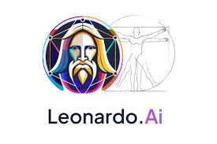
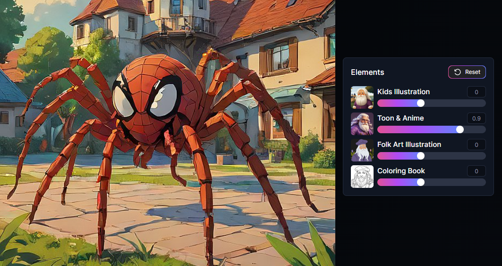
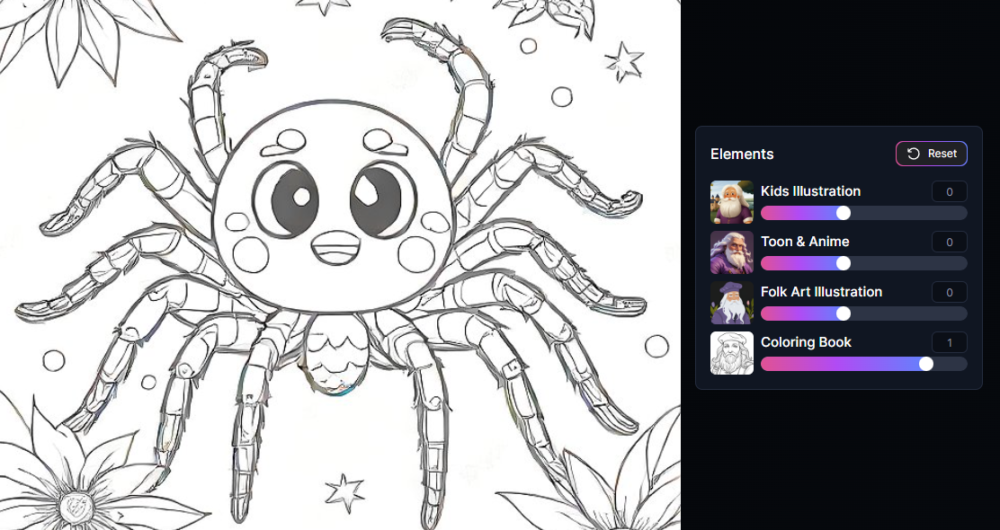
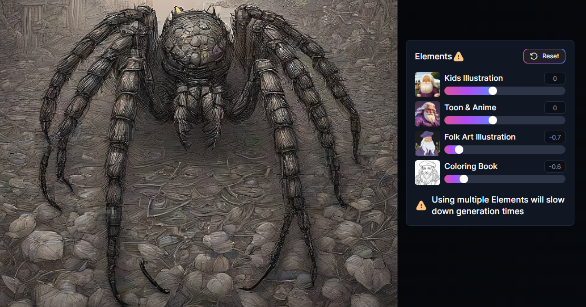
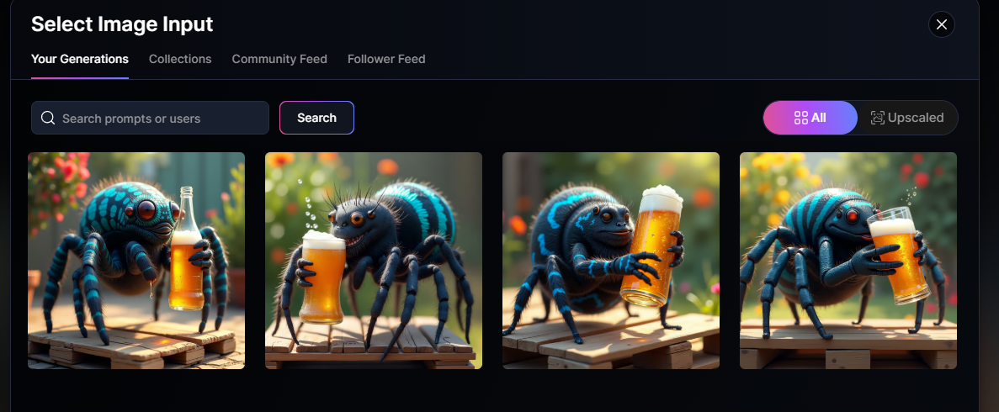

"LEONARDO IA"
"LEONARDO IA"
Introducción
La ingenieria artificial IA es un campo de la informatica que permite a las maquinas
realizar tareas que normalmente requieren inteligencia humana. La IA funciona a travez
de algoritmos y modelos matemáticos que analizan datos y toman desiciones.
¿QUE ES LEONARDO?
Leonardo es una plataforma que permite crear imagenes, utilizando modelos de
inteligencianartificial pre en tranados o personalizado. Leonardo.ai combina
la tecnología de inteligencia artificial generativa con la creatividad humana.

En lo general Leonardo IA es una de las mejores herramientas del mercado para la
generación, modificación de imagenes y videos con IA. Leonardo tiene algunas
caracteristicas impresionanantes que son exclicivas de la plataforma, como
Realtime Canvasy Realtime Generations.
Los usuarios pueden acceder gratuitamente a la IA y utilizar una cuata diaris de
150 tokens para generar imagenes. los tokens son un credito que se gasta en cada
imagen generada, es decir, con cada nuevo proyecto se ocupa un token.
Generación de diferentes imagenes:
Ejemplo una araña tomando cerveza
En raal time gen



Leonardo IA tiene muchísimas aplicaciones prácticas en áreas creativas y diseño
Mencionamos algunas de las mas destacadas:
1.- Diseño grafico: Es ideal para crear logotipos, banners, elementos
visuales personalizados para marcas y proyectos.
2.- Creaciónde concepto atr: Muy utilizado en industrias como video juegos
cine y animación para visualizar personajes, esenarios o incluso
objetos antes de desrrollarlos.
3.- Publicidady Marketing: Permite generar imágenes atractivas y únicas para
campañas publicitarias, redes sociales o contenido visual.
4.- Portotipos de productos. Ayuda a diceñar y visualizar modelos iniciales de
productos antes de su producción.
5.- Educación y arte: Facilita la creación de recursos visuales para lecciones,
tutoriales o proyectos artisticos.
6.- Decoeación e ispiración: Desde ideas para interiores hasta ilustarciones
decorativas para espacios personales o profecionales.
7.- Personalización de contenido: Es perfecta par generar contenido visual adaptado
a las nececidades del cliente o proyecto.
Seleccionar imagenes generadas:

Consideraciones éticas.
El uso de IA para crear imágenes plantea varias consideraciones éticas que son importantes tener
en cuenta. Aquí te detallo algunas de las más relevantes:
1. Derechos de autor y propiedad intelectual: Asegúrate de no infringir derechos de autor,
especialmente si utilizas la IA para crear obras derivadas o inspiradas en estilos existentes.
Es esencial respetar el trabajo de artistas y creadores originales.
2. Atribución adecuada: Si usas contenido generado por IA en proyectos públicos o comerciales,
es importante dejar claro que fue creado con esta herramienta, para ser transparente con tu
audiencia.
3. Evitar desinformación: Las imágenes creadas con IA pueden ser muy realistas, lo que puede
llevar a su uso para crear contenido engañoso o manipulador, como falsificaciones (deepfakes).
Esto puede tener impactos negativos en la confianza pública o en la reputación de individuos.
4. Implicaciones culturales y sociales: Algunas imágenes podrían incluir estereotipos dañinos
o representar temas sensibles de manera inapropiada. Es importante tener cuidado con el contexto
cultural y las posibles interpretaciones de las imágenes.
5. Impacto en el empleo y la comunidad artística: El uso de IA puede afectar la demanda de
artistas y diseñadores humanos. Considera cómo apoyar y colaborar con los creativos en lugar
de reemplazarlos por completo.
6. Uso responsable: No uses la IA para crear contenido ofensivo, dañino o que promueva el
odio. Las herramientas de IA deben emplearse de manera positiva y constructiva.
Tener presentes estas consideraciones éticas ayuda a garantizar que el uso de la IA sea
respetuoso y beneficioso para todos.
Resumen:
Leonardo AI es una plataforma de inteligencia artificial especializada en la creación de
contenidos visuales. Su enfoque principal es generar imágenes digitales, ilustraciones y
gráficos personalizados utilizando modelos avanzados de aprendizaje automático. Es ampliamente
utilizada en diseño gráfico, creación de concept art, publicidad y otros campos creativos.
Los usuarios pueden describir lo que necesitan y Leonardo genera resultados en base a esas
descripciones.